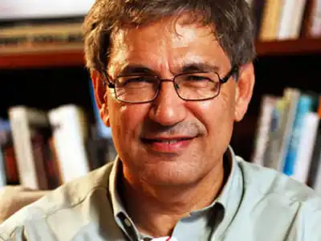

Феріт Орхан Памук (тур. Ferit Orhan Pamuk, 7 червня 1952 Стамбул, Туреччина) — сучасний турецький письменник черкеського походження, лауреат декількох національних і міжнародних літературних премій, в тому числі Нобелівської премії з літератури (2006). Популярний як в Туреччині, так і за її межами, твори письменника перекладені на більш ніж п'ятдесят мов. Відомий своєю громадянською позицією щодо геноциду вірмен і дискримінації курдів у Туреччині, яка не співпадає з думкою офіційних турецьких властей.
Ім'я Орхана Памука — синонім абсолютного літературного успіху, крім високої якості текстів, ще й тому, що він — перший турецький письменник за останні півтисячоліття, по-справжньому здобув визнання у всьому світі і добився найвищої для письменника нагороди — Нобелівської премії. Сам Памук нарікає, втім, що його проза не до кінця зрозуміла читачем, не цілком розкрита, і він, уже маститий письменник, все ще знаходиться в пошуках рідної душі. "Душа сучасного читача стала холодною, а я шукаю вогню", — говорить він.
З романом "Чорна книга", що вийшов на початку 1990-х, Орхан буквально увірвався в світову літературну еліту. У його прозі потужну традицію західноєвропейського роману знайшла вдале поєднання зі східними світосприйняттям, філософією і колоритом, завдяки чому Памук вже сьогодні поставлений в один ряд з Милорадом Павичем і Умберто Еко. При цьому, незважаючи на зовнішню традиційність текстів, літературні критики характеризують стиль Орхана як постмодерністський, а в Туреччині його називають ще більш радикально — авангардним. До слова, український — один з небагатьох європейських мов, на який ще не перекладалися романи Памука, і, тим не менш, Орхан встиг побувати в Києві, відгукнувшись на запрошення свого колеги Андрія Куркова. Перша книга Памука, що знайшла успіх за межами Туреччини, — "Біла фортеця". У 1990 році вона здобула премію британської газети The Independent. У тому ж році був опублікований один з найвідоміших романів письменника — "Чорна книга", миттєво став бестселером і протягом року переведений на 10 мов. За книгу "Мене звуть Червоний" (1993) письменник був удостоєний найбільшої літературної премії IМРАС — 100 000 євро. У чому ж секрет такого швидкого успіху? Для цього є різні причини. Перш за все, вражає одна особливість його творів. У прес-релізі Шведської Королівської академії (Памук був удостоєний Нобелівської премії в 2006 році) було кілька витіювато сказано, що романіст "в пошуках меланхолійної душі рідного міста знайшов нові знаки для позначення зіткнення і переплетення культур". І це дійсно так. Його романи завжди звернені до представника іншої культури, і це спілкування постає як діалог Сходу і Заходу. Таким чином, мультикультурна установка Памука багато в чому і підкупила читача. Він народився в 1952 голу в Стамбулі в заможній родині. Його батько був першим виконавчим директором турецького відділення IBM. Майбутній письменник навчався в престижній американській школі, потім — у технічному університеті. Але, захопившись журналістикою, Памук поставив хрест на кар'єрі технічного фахівця. Після закінчення Стамбульського університету, де Орхан освоював спеціальність журналіста, він кілька років викладав в США. З середини 1980-х Памук займається виключно літературою. Цікава історія походження його прізвища. Колись предки Орхана втекли з Кавказу до Туреччини і оселилися в греко-турецькому містечку Маніса. Сімейство отримало прізвисько "Памук" (в перекладі з турецької — бавовна) за занадто світлий колір шкіри, нехарактерний для тих місць. "Це була типова республіканська сім'я з типовими світськими цінностями: лібералізм, секуляризм, інтерес до чужих культур, — згадує письменник. — Тому мене виховували з "західним" ухилом ". Романіст любить розповідати про витоки добробуту своєї родини і свої дитячі роки. "Мій дід розбагатів в 30-х роках на будівництві залізниць. Він був дуже багатий, але рано помер, а його численні діти бездарно промотали спадок. Після смерті діда всім заправляла бабуся — у неї було четверо дітей, і всі жили у великому будинку в районі Нішанташі. Пізніше будинок перебудували в прибутковий, і всі домочадці, включаючи моїх батьків, розселилися по окремих квартирах — в цьому ж самому будинку. Так що дитиною я жив в звичайному багатоквартирному будинку, а курйоз полягав у тому, що у всіх квартирах мешкали мої родичі. Природно, двері навстіж, і я тинявся з однієї квартири в іншу. Мене балували ... Потім гроші стали танути — ми все ще їли на сріблі, але вже замість сільнички, наприклад, використовували медичну пробірку "і мова зайшла про кредит готівкою під заставу. Письменником Орхан став багато в чому завдяки своєму батькові, Гюндюз. Коли в 2006 році він отримав Нобелівську премію, то частина лекції, яку він виголосив у Стокгольмі, присвятив батькові. За два роки до смерті Памук-старший передав романістові маленький чемодан, заповнений паперами та записниками. Цей чемодан був знайомий письменникові з дитинства — коли батько повертався з поїздок, Орхан відкривав його і "насолоджувався запахом одеколону і далеких країн". З одного боку, Орхан побоювався, що написане батьком йому не сподобається. Гюндюз Памук, ймовірно, передчуваючи це, вів себе так, ніби вміст валізи нічого для нього не означає ... З іншого боку, ще сильніше майбутній Нобелівський лауреат боявся дізнатися, що його батько — хороший письменник. Це була якась внутрішня кровна конкуренція. Його лякала можливість виявити, що "всередині батька жив зовсім інша людина, не той жартівник, весело ставиться до життя, яким він завжди здавався". Памук згадує, що батько ніколи не карав його, не пригнічував свободу і нічого йому не забороняв. Навпаки, завжди шанобливо ставився до своєї дитини, бачив в ньому дорослої людини. Тому не дивний той факт, що в двадцять два роки, закінчивши свій перший роман, Орхан вирішив показати рукопис батька: Думка батька було дуже важливо ще й тому, що, на відміну від матері, він ніколи не противився бажанням Памука стати письменником. Прочитавши рукопис, батько сказав, що коли-небудь його син отримає Нобелівську премію і зможе купити будинок в Майамі. "Якби не впевненість, яку вселив в мене батько, мені було б набагато складніше стати письменником, зробити це справою свого життя", — зізнається романіст. Крім того, ще були книги ... Гюндюз Памук мав велику бібліотеку в 1 500 томів. В інтерв'ю письменник не раз зізнавався, що дуже багато чому в житті зобов'язаний цій бібліотеці. Дитиною Орхан любив розглядати книги, мріючи одного разу зібрати свою колекцію — "побудувати свій світ". "Моє головне завдання — не володіти хорошими книгами, а писати хороші книги, — пояснював письменник. — Але для цього необхідно мати доступ до хороших книг ". Будучи вже всесвітньо відомим літератором, Памук не перестає говорити про те, що дванадцять тисяч томів, що складають його бібліотеку, — потужне джерело натхнення. "Хороші книги необхідні так само, як свіжі новини: саме тому я до сих пір прив'язаний до книг". Одне з головних місць в бібліотеці відведено російській літературі, вплив якої досить легко проглядається в його творах: це Достоєвський, Толстой, Чехов, Набоков. В цілому, однак, творча індивідуальність письменника має глибокі національні корені, причому склалося так, що стамбульська субкультура, що з'єднує в собі східне і західне початку, справила на Памука величезний вплив. Це, вкупі з особливостями психології його сім'ї, про що йшлося вище, допомогло Орханові придбати дивовижну стилістичну пластичність, здатність мислити одночасно в двох ментальних площинах. Наявність двох начал в людині або в культурі не є недоліком, — вважає письменник, — навпаки, це перевага. "Набагато страшніше, якщо ви перетворюєтеся в монистическую особистість. Я критично ставлюся до однобокого погляду на світ і вважаю, що Туреччина не повинна належати тільки Сходу або тільки Заходу. Це прямий шлях до фанатизму і ксенофобії ". Належачи як західної, так і східної традиції, Орхан вільно подорожує між цими двома світами, як за власним дому. Книги письменника є тонкою філігрань, вони ніби зіткані з примхливого переплетення історій і сюжетів Сходу і Заходу, форм і стилів. Саме так постає в його творчості діалог культур. Позиція письменника зі спірних національних питань зробила його суперечливою особистістю серед співвітчизників. У 2005 році турецький уряд подало на письменника до суду. Приводом послужила фраза з інтерв'ю швейцарському виданню Das Magazin в лютому 2005 року: "У Туреччині вбито мільйон вірмен і триста тисяч курдів. Про це ніхто не говорить, і мене ненавидять за те, що я говорю про це ". За словами Памука, після цієї публікації він став об'єктом кампанії ненависті, змушений був покинути Туреччину, але незабаром повернувся, незважаючи на звинувачення і ризик переслідувань. "Для мене бути романістом — означає вміти творчо реагувати на останні події, — заявляє він. — Є літератори, які говорять: а мені байдуже, що думають критики, читачі. Але це не про мене. У мене бувають різні ситуації, але я ніколи не роблю дешевих ходів — скажімо, нічого не додаю до своїх романів заради кращих продажів в Німеччині або в Штатах, чи в Туреччині. Я — це просто я ". Мудрість Памука — не просто вроджена якість, воно завойовано душевним працею, особливим ставленням до світу, пробудившимся в письменника після освоєння їм релігійних практик Сходу. "У 1985 році моя дружина отримала стипендію в Колумбійському університеті, і ми поїхали в Штати на три роки, — розповідає Орхан. — Раптом, несподівано для себе, я почав читати суфійську поезію, цікавитися ісламським містицизмом. На щастя, в бібліотеці Колумбійського університету був величезний турецький відділ. І тоді я відкрив заново ісламську літературу. Я читав суфійську поезію запоєм, насолоджуючись сюжетами, алегоріями, майже борхесіанські історіями. Тоді ж я звернув увагу, що структурно європейська і ісламська середньовічна література дуже схожа ". Відразу Памук настільки "пішов" в суфізм, що навіть кинув палити! Треба сказати, в цьому своєму захопленні Орхан потрапив в точку. По крайней мере, стародавні духовні практики допомогли йому вийти на новий рівень майстерності.